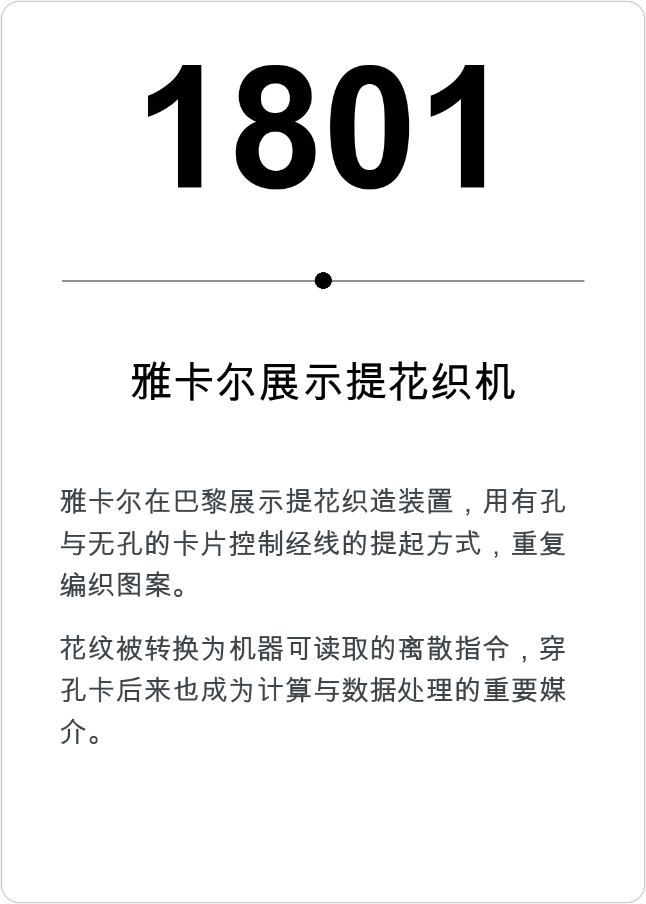
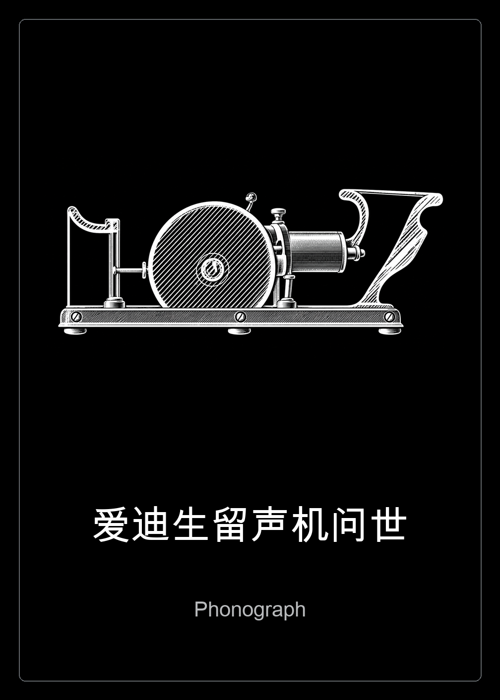
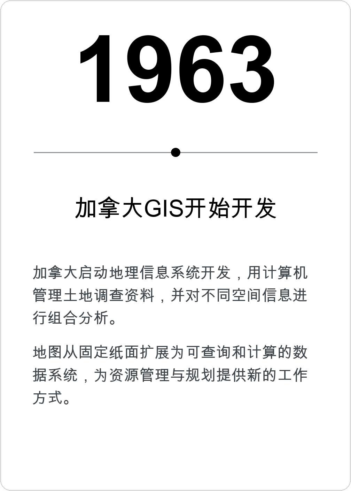

计算帝国



- 已作答
- 0
- 答对
- 0
- 答错
- 0
- 正确率
- —
历史卡
关于
这些卡片从 Calculating Empires 出发。原作由 Kate Crawford 与 Vladan Joler 创作，将技术、权力与社会的漫长关系放在一张巨大的图中。
原作引用与免责声明
本项目是个人制作的非官方历史卡牌游戏，仅供个人学习与娱乐，不用于任何商业用途，与原作者及展览机构无隶属或合作关系。原作与原始图像的权利归相应权利人所有；本说明不构成任何额外授权。
卡片图像取材于原网站；部分经 AI 去除文字遮挡并补全，部分使用同主题概念配图。每张卡片详情均附配图说明与来源链接。
关于年份
每张卡按标题描述的具体事件判定年份，例如论文发表、公开展示或产品上市。答案用整数表示，公元前使用负数。历史常有多种时间口径，可在详情中查看对应来源及年份审核记录。
怎么玩
- 输入名字，随机发一张白面朝上的已知卡，以及一张黑色事件卡。
- 点击时间轴上的「＋」：左边更早，右边更晚，也可以插入两张卡之间。
- 系统揭晓年份并记录正误，将卡片归入正确位置。同年相邻都算正确。点击已揭晓的图片可以放大阅读。
- 至少回答 10 张才可结束，不包含初始的已知卡。第 10 张之后仍可继续，最多回答 283 张，每局不重复抽卡。
分数与分享
正确率 = 答对 ÷ 已作答。初始卡和未回答的卡不计分，答错也可以继续。
结束后生成一张成绩卡，包含姓名、正确率、答题数、结束时间和游戏二维码，可以保存为图片或分享。没有排行榜，每局都有自己的成绩卡。
当前进度保存在浏览器里，不上传服务器。刷新可以继续，换浏览器或清除网站数据后无法恢复。